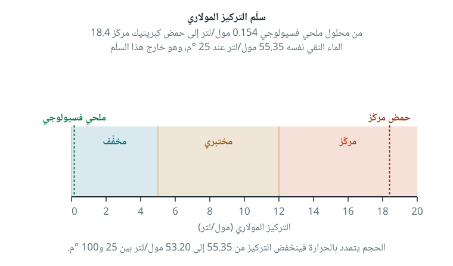

التركيز المولاري
Molarity
عدد مولات المذاب في لتر من المحلول، وهو تركيز حجمي ينخفض بارتفاع الحرارة لأن حجم المحلول يتمدد وإن كانت كمية المذاب ثابتة.
التركيز المولاري c هو عدد مولات المذاب في لتر واحد من المحلول: c = n/V. الوحدة مول/لتر، وتُكتب M اختصارًا. يختلف عن النسبة الكتلية في أن المقام حجم المحلول لا كتلة المذيب، وهذا الفرق هو مصدر معظم أخطاء التحضير في المخابر.
لتحضير محلول بتركيز معلوم تُوزن كتلة المذاب، تُحوّل إلى مولات، تُذاب في حجم صغير من المذيب، ثم يُكمَّل الحجم في دورق معياري إلى العلامة. لا يُضاف المذيب بحجم محسوب مسبقًا، لأن إذابة المذاب تغيّر الحجم النهائي: انحلال الملح في الماء يزيد الحجم أقل من حجم الماء المضاف إليه وحده، لأن الأيونات ترتّب جزيئات الماء حولها فتنكمش الكتلة الحجمية للمحلول.
مع الحرارة يتغيّر الحجم فيتغيّر التركيز المولاري ولو لم يدخل أو يخرج مذاب. الأثر صغير في الظروف العادية، لكنه ليس مهملًا عند المقارنة بين قياسات عند 20 و100 °م، ولهذا تُذكر الحرارة مع كل تركيز مولاري دقيق.
الآلية
كيف يحدث الأمر على مستوى الجسيمات أو المتغيّرات المباشرة
تغيّر التركيز مع الحرارة سببه مباشر: معامل التمدد الحجمي للماء موجب فوق 4 °م، فارتفاع الحرارة يزيد حجم لتر المحلول بنسبة أكبر من زيادة حجم المذاب المذاب فيه. عدد المولات n ثابت لأن لا شيء يتبخّر ولا يترسّب، والمقام V يزداد، فتنخفض النسبة. الأثر مضاعف في المحاليل المائية لأن الماء نفسه هو المتوسط المتمدد، ويكاد يكون معامل تمدده في المجال 20–100 °م أعلى من معامل تمدد معظم الأملاح الذائبة. عند التبريد إلى ما دون 4 °م ينقلب اتجاه التمدد، فيرتفع التركيز المولاري بدلًا من أن ينخفض.
الأرقام والوحدات
العلاقات والوحدات والنطاقات العددية التي تسند الشرح
الماء النقي عند 25 °م كثافته 997.05 kg/m³ وكتلته المولية 18.015 g/mol، فتركيزه المولاري 997.05 ÷ 18.015 = 55.35 mol/L. وعند 100 °م تنخفض الكثافة إلى 958.35 kg/m³ فيصبح التركيز 53.20 mol/L، أي انخفاض 3.9% عند رفع الحرارة 75 كلفن بلا فقد أي مول. وللمقارنة، محلول ملح الطعام 0.9% كتليًّا تركيزه 0.154 mol/L، وهو أقل من تركيز الماء النقي في نفسه بمقدار 360 ضعفًا.
الفرق الدقيق
المفهوم الملتبس الذي يُخلَط به، وأين ينفصلان
الخلط الأول بين المولارية والمولالية: الأولى مول لكل لتر محلول وتتغيّر مع الحرارة، والثانية مول لكل كيلوغرام مذيب ولا تتغيّر معها، ولهذا تُفضَّل المولالية في الحسابات التي تعتمد على خصائص المذيب. الثاني بين المولارية والعيارية N: العيارية وزن مكافئ لكل لتر وتعتمد على التفاعل المستخدم، فيمكن أن يكون للمحلول الواحد أكثر من عيارية. الثالث بين حجم المحلول وحجم المذيب، وهما لا يتساويان إلا في محاليل شديدة التخفيف. الرابع بين التركيز المولاري والكسر المولي، فالثاني نسبة عددية لا تعتمد على الحجم أصلًا.
حدود التعريف
أين ينكسر التعريف أو النموذج وما الذي لا يفسّره
التركيز المولاري مقياس تركيبي لا حراري؛ في المحاليل المركّزة يصبح النشاط الكيميائي مختلفًا عن التركيز بفارق كبير، ومعه تفشل كل الحسابات التي تعوّض التركيز مكان النشاط كأنهما متساويان. وفي المحاليل شديدة التخفيف يقترب التركيز من الصفر وتصبح دقة الحجم هي حدّ الدقة كله. والوحدة نفسها غير مناسبة للغازات لأن حجم الغاز دالة للضغط والحرارة، ولا للمواد الصلبة غير الذوّابة. وأخيرًا، إذا جرى التفاعل نفسه داخل المحلول وتغيّرت الحرارة أثناءه تغيّر التركيز أثناء القياس، فلا بدّ من تثبيت الحرارة أو الرجوع إلى المولالية.

| الكمية | القيمة | المصدر |
|---|---|---|
| كثافة الماء عند 25 °م | 997.05 كيلوغرام/م³ | [2] |
| كثافة الماء عند 100 °م | 958.35 كيلوغرام/م³ | [2] |
| التركيز المولاري للماء النقي عند 25 °م | 55.35 مول/لتر | [1] |
| التركيز المولاري للماء النقي عند 100 °م | 53.20 مول/لتر | [1] |
| تركيز محلول ملح الطعام 0.9% | 0.154 مول/لتر | [1] |
المصادر
- 1 Chemistry 2e — 3.3 Molarity — OpenStax, Rice University. openstax.org/books/chemistry-2e/pages/3-3-molarity · اطُّلع عليه 2026-11-16
- 2 Water — Density, Specific Weight and Thermal Expansion Coefficients — The Engineering ToolBox. www.engineeringtoolbox.com/water-density-specific-weight-d_595.html · اطُّلع عليه 2026-11-16
- 3 Water — NIST Chemistry WebBook, SRD 69 — NIST. webbook.nist.gov/cgi/cbook.cgi?ID=C7732185 · اطُّلع عليه 2026-11-16
استشهد بهذا المصطلح
الصيغتان مبنيتان من بيانات الصفحة نفسها: العنوان والتاريخ ورابط النسخة المنشورة.
التركيز المولاري — Molarity. (2026). ديوان المعرفة — انفراد. https://infiradev.com/diwan/terms/molarity.html
@misc{molarity2026,
title = {التركيز المولاري},
titleaddon = {Molarity},
howpublished = {{ديوان المعرفة — انفراد} — مرجع علمي عربي},
year = {2026},
url = {https://infiradev.com/diwan/terms/molarity.html},
urldate = {2026-11-16},
note = {مراجعة علمية: مراجعة آلية — ديوان المعرفة (روابط المصادر + عقد المحتوى + وجود الرسم) 2026-11-16}
}
راجعه: مراجعة آلية — ديوان المعرفة (روابط المصادر + عقد المحتوى + وجود الرسم) 2026-11-16 · 2026-11-16 · آخر تحديث 2026-11-16